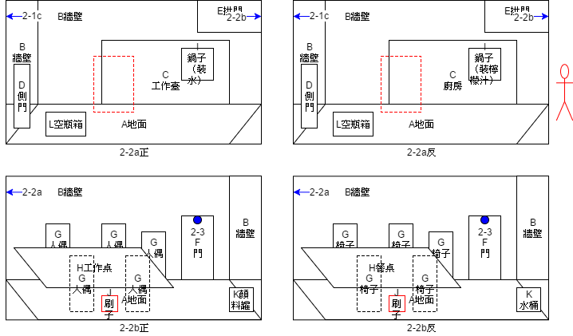
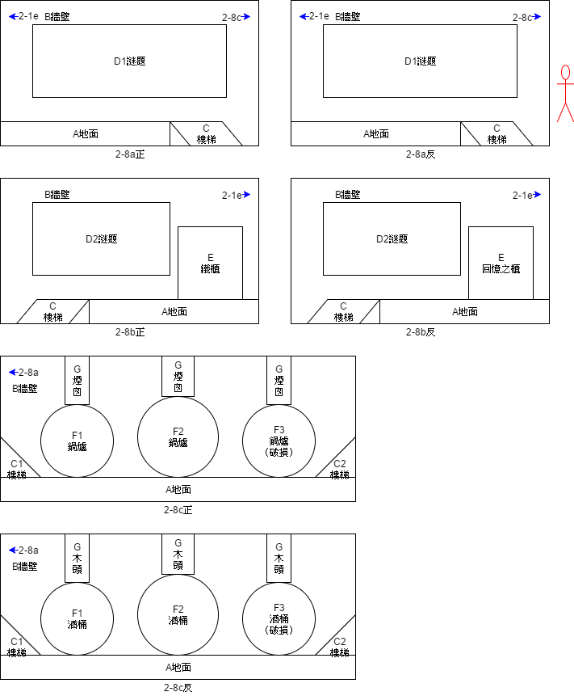
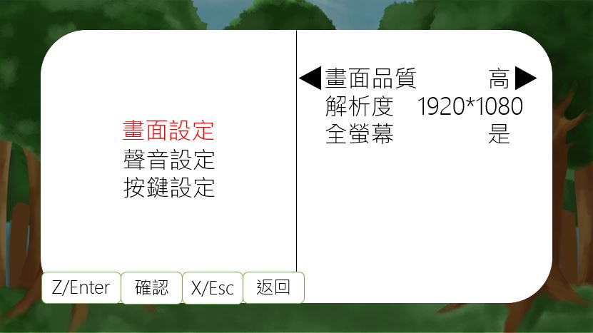
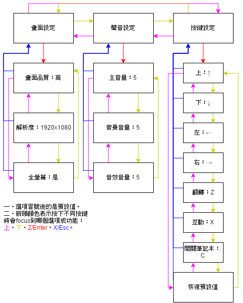
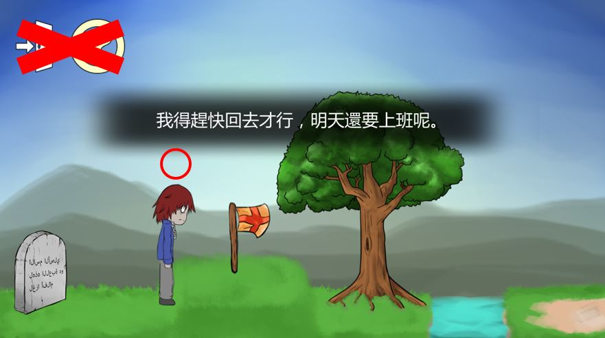

1 Design History
1.1 Flip Tale 1.0
此版本為臺大黑客松時所建置之版本，該版本曾在黑客松展出期間供評審、參賽者等試玩。由於當時尚未有良好的版本號系統，因此僅以1.0命名之。
1.2 Flip Tale v1.0.2_pre
此版本為2016台大社團博覽會時所建置之版本，放置於攤位上並作為給予參與博覽會人員試玩之用。該版本特色為美術尚使用小畫家之可愛風格。
1.3 Flip Tale v1.0.3
此版本為2017台大杜鵑花節時所建置之版本，放置於攤位上並作為予參與杜鵑花節人員試玩之用，亦曾在CH2上展出，也是初始放上社團網站之公開載點之版本。該版本特色為美術進行了大幅度的革新，並修改運鏡方式與不少Bugs。
1.4 Flip Tale TGS
此版本為專門為了2018台北國際電玩展所建置之版本，在展覽中Unizza Studio團隊分別參加了B2B與B2C（Indie House），並得到許多玩家們的回饋。該版本特色為對第一關進行了小幅度的關卡重構、也修改前導劇情的敘述與主選單，並加入對話系統。
2 Game Overview
2.1 Introduction
本遊戲為2D橫向動作解謎遊戲，目前發布的平台為PC（Windows/Mac）。玩家須操縱主角並利用其「翻轉」能力與世界互動：穿梭於兩個世界之間並利用在不同世界中輪廓相同而內容相異所形成的物件解開謎題前進，從而瞭解整個世界。最後試圖釐清並解開白光、小男孩的真相與整起事件的始末。
2.2 Features
融合翻轉機制的謎題：玩家在遊戲中必須活用「翻轉」－試圖思考相同輪廓而不同內容之物件的關聯性，並與場景、NPC等互動，進而解開謎題。
2.3 Idea
藉由探索主兩個人格之間的轉換，讓玩家瞭解到人看待世界的方式，重新省思自己的內心世界。使人尋找適當方法，更是瞭解到紓解壓力的重要性，學習培養健康心靈，邁向更加健全的人生。
3 Game Mechanics
3.1 Overview
本遊戲中所有單一場景之尺寸均為1280 * 720（後以a * b稱之，即a:b=16:9）。而場景中主角的高度若無特別註明，均約為b/2.5，寬度則待人物固定身高後依照等比例縮放。
3.2 Control
玩家可使用按鍵如下：
- 方向鍵（上）：跳躍／進入／上爬
- 方向鍵（左右）：移動
- Z鍵：翻轉
- X鍵：拾取物品／使用物品／觸發事件／觸發對話／加速對話／放下物品（長按）
- Esc鍵／C鍵：開啟筆記本（設定選單）／關閉筆記本（設定選單）
3.3 Flip & Item
在關卡中按下Z鍵即可在兩個世界中穿梭，而此時場景物件會分別執行兩種轉換：翻轉或變色，而哪種場景物件對應到哪種轉換形式則會在企劃書中標出。
當玩家在關卡中對「可拾取道具」或是「經由互動可得到道具之物件」按X時，即可將該道具拿到手上。當玩家手上有道具時，長按X約半秒則可將該道具放下（介面參照7.2），而放下後的道具會稍微縮小以及加上白框來對場景中其他物件做出區別。
3.4 Dialogue
對於對白的觸發方式，可依照觸發的條件而區分為「空間條件」與「其他條件」。前者為設定某個觸發區域，當主角一走進該區域即可滿足該條件；後者則是玩家必須滿足其他的條件。而當玩家滿足上述條件後在按下所指定的按鍵即可觸發對話。一般而言獨白多為僅需空間條件的達成，尚須滿足其他條件之型態多用於對話或使用物品之情況。此外在某些條件下會有較為特殊的對白，關於此種對白多與重要劇情有關，另行標出。
而根據對白觸發次數亦可分為一次性或重複性對白。對白觸發時並不會凍結玩家的操作，因此玩家仍可自由翻轉與移動。另外有些對白觸發時為隨機對白，即每次在「遊戲狀態條件相同」的情況下觸發該對白，並不一定會顯示同一種內容。
基本上對白可區分為對白框與對白文字兩部分，對於對白框在觸發對白時以淡入形式顯現，在同一對白事件下文字切換時並不會跟著淡入淡出，且框之大小亦不變，唯該對白事件結束後對話框尚可跟隨對白文字一同淡出。
以下為對白文字部分之生命週期中進行不同動作所觸發之行為圖：首先為基本模式，即對白文字部分在行進時不進行任何按鍵或事件觸發，會依序歷經三個時期（淡入期、顯現期、淡出期），可參見下圖。
 對白在行進時若按下Z鍵時，此時若無新對白的觸發，則進行按鍵事件的結算（也就是翻轉）。若此時有不同新對白的觸發，則新對白會將舊對白事件覆蓋（時間點a為按下Z鍵時），可參見下圖。
對白在行進時若按下Z鍵時，此時若無新對白的觸發，則進行按鍵事件的結算（也就是翻轉）。若此時有不同新對白的觸發，則新對白會將舊對白事件覆蓋（時間點a為按下Z鍵時），可參見下圖。
 對白在行進時若按下X鍵（時間點a），此時X鍵之功能為「對白快進鍵」，可參見下圖。特別注意到若此時X鍵亦可觸發使用物品事件，則一律先結算對白快進事件，即若X鍵在場合可同時具有「對白快進鍵功能」與「觸發使用物品事件功能」時，一概以前者作為優先判定。最後，對白框在行進時若離開該場景或對白觸發區域時（時間點a）之情況可參見下圖。
對白在行進時若按下X鍵（時間點a），此時X鍵之功能為「對白快進鍵」，可參見下圖。特別注意到若此時X鍵亦可觸發使用物品事件，則一律先結算對白快進事件，即若X鍵在場合可同時具有「對白快進鍵功能」與「觸發使用物品事件功能」時，一概以前者作為優先判定。最後，對白框在行進時若離開該場景或對白觸發區域時（時間點a）之情況可參見下圖。
3.5 Animation
某些「物件互動動畫」與「劇情動畫」在播放時，畫面的上下兩邊會逐漸切入黑邊（像在看電影一樣），此時封鎖玩家的行動（方向鍵、Z、X、C、Esc皆鎖住），待動畫結束後黑邊往畫面上下離開。
在企劃書中將以「電影式動畫」來描述此種動畫事件，動畫一覽參照10.1。
3.6 Idea & Setting Menu
當玩家在遊戲中拾取到「父親的筆記本」後，Idea機制即啟用。只要在關卡中按下C鍵即可呼叫出來、再次按下C鍵即可關閉。筆記本開啟時利用方向鍵左、右進行向左、向右翻頁，隨著遊戲的進行（當滿足一定條件主角頭上會出現燈泡，提示玩家可以去看筆記本），主角的想法會逐漸記錄在筆記本中。
3.7 Save & Load
遊戲的存檔機制可分為「大關間存檔」與「大關內存檔」：前者以大關為單位存檔（例如：玩家破完第一關之後，下次開啟可從第二關開始）；後者在關卡內為「完全存檔」，當玩家觸發存檔事件時，遊戲即將遊戲當時的狀態（包含任務進度、事件觸發、物件狀態、場景狀態、主角狀態等「完全保存」）。
關於存檔事件的觸發，當玩家在場景某處看到當初父親送給主角的「渡鴉」時，對著牠按X（無論是否有手持物件皆優先觸發存檔事件）即可存檔。遊戲的讀檔機制則透過UI系統實作（介面參照7.5），選單內會有讀檔選項，當玩家選擇選項則讀取相應的存檔。
4 Game Flow
4.1 Overview
遊戲共分為三大關與一小段教學關卡，當玩家完成第三關後即進入結局，遊戲結束。
4.2 Plot
故事發生在現代世界，主角是一個普通的上班族－如同其他人一樣在社會的體制下領取稀少的薪資，並受到公司的打壓。某天當主角下班後走在路上時，他看到了那隻令他感到無比熟悉的「渡鴉」，因此立刻追了上去，當他轉入一個轉角的時候白光突然壟罩了他的雙眼...
白光消失後主角從現實中進到我們設定的世界。
一切要從主角小時候說起：他生於一個溫馨的家庭，身為獨生子的他有一父一母。而主角的父親是一名空軍（戰鬥機駕駛員），時常要離開家去打仗。父親在休假回家時常常和主角分享飛行的快樂（不會提到關於打仗的事），讓小時候的主角對「飛行」產生憧憬－夢想著當個飛行員（私人飛機駕駛員），有一架屬於自己的飛機，可以自由自在地探索整個世界。
基本上主角的父親的思想較為開放，認為人在世界上應該要盡可能地追求自己所嚮往的事物（但即使父親喜歡飛行，但仍為國家情勢所逼而站上第一線戰場）；母親對於一直去打仗的父親失去安全感（覺得似乎何時都有可能會失去這位丈夫），認為人應該追求正常的生活、有穩定的收入，平凡也是一種幸福。
後來父親因公殉職、母親再婚，生下了一個同母異父的妹妹。而繼父跟母親的理念大致相似（平凡的生活），即使如此繼父也是愛著主角的。在沒有飛行相關的家庭下，母親與繼父共同向主角灌輸追求穩定生活的思想，主角逐漸被潛移默化。也由於父親的殉職少了給予夢想的因素，這兩項原因導致主角逐漸忘記夢想。主角的妹妹不認識主角本來的父親，和主角相處融洽，長大後也因為家庭關係投入正常的工作。
學生時代以考試導向的教育體制讓主角在成長過程中漸漸迷失方向，只會學習別人限制的知識。而弱肉強食的社會體制更是讓主角在工作時更難接觸到自己有興趣的事物，常常因為工作機會考量而強迫自己去做不想做的事。後來主角當上了文書處理類型的公務人員，平時受盡欺凌壓榨、工作也備感壓力。小時候的夢想已經不復存在。
當長大後的主角回想到自己曾經的夢想時為感到很後悔，但是自己已經錯過人生的精華階段，不可能再重來。感到一絲帶有遺憾的暖意，（大概就是「原來我曾經有這樣的夢想啊…」的感覺），俗話說「花有重開日，人無再少年。」就是指這種情況吧。
關於渡鴉：傳說渡鴉是能連接生死的生物。當父親去打最後一場仗時，有隱約感覺自己會死在戰場上，因此託付託付別人帶給主角一隻渡鴉。主角起始很疼愛這隻渡鴉，後來隨著母親再婚而忘記夢想的同時，有一天這隻渡鴉就飛走了。其實渡鴉離開主角是為了飛到了戰場，把「父親的筆記本」撿了起來，那本筆記本是父親記錄著與主角相處的時光，第一頁父親畫了他與兒子一起開飛機的畫－希望在戰爭結束與主角長大後，可以一起飛向天空。
關於白光：事實上正當主角下班回家時就被一輛突如其來的車撞死了（白光正是該車的大燈），因此遊戲中的世界也正是主角死後的世界，在初始場景的墓碑就是主角自己的墓碑。而小男孩則是主角小時候的模樣，代表著主角在小時候充滿童心、夢想的自我，即為主角之反面人格。而正面人格則是代表著主角在社會化的歷程中受盡壓榨欺凌，進而遺忘夢想的自我。
教學關卡可以說是從現實過渡到幻想世界的橋段：主角會在這裡撿到那本筆記本，並發現「翻轉世界」的能力後進到第一關的場景。
第一關的場景在一個島上，關卡場景會讓主角逐漸想起被他遺忘的夢想，最後乘著熱氣球離開島嶼。
第二關的場景是浮在空中的城堡，遇到不同的NPC後讓主角更加明白自己與過去的區別。
4.3 World View
遊戲中的整個世界都是主角的潛意識所投射出來的世界，正面是藉由主角長大後人格所「感受、理解到的世界」；反面則是主角尚小時人格所「感受、理解到的世界」。因此，正面世界的場景與物件自然會比較貼近現實（因為是長大後所看到的），而反面則較不受拘束（小時候有很多的想像）。
無論是哪一個世界，客觀來說都不屬於現實。在兩個世界切換時有以下幾點設定：- 某些物件在正反面輪廓相同，而內容不同；甚至正反兩面可能一面為生物、一面為無生命。
- 玩家可以共有正反兩面的記憶。
- 正反兩面的「同一個NPC」並不知道彼此的存在，知識也不共有。
- 正反兩面切換時所有物件的「宏觀物理量」都會相同（例如正面的石頭以5m/s的速率飛行，切換後的紙團應該也要以5m/s的速率飛行，即便考慮質量會造成兩者動能不同）。
5 Characters
5.1 Overview
在遊戲中登場的主要角色為玩家所操控的角色，藉由使玩家操控主角來達到帶入遊戲的目的。而主角家人亦會在遊戲劇情部分登場，主要作用為敘述主角的背景設定與心路歷程。此外，第二關關卡中加入了不少NPC，可使玩家與其互動進而瞭解整體劇情的脈絡。
5.2 Player
大人人格（正面）：看起來很陰沉、面容憔悴，走起路來緩慢且駝背。
小孩人格（反面）：看起來很開心，走起路來很有朝氣的樣子。
5.3 Non Player Characters
5.3.1 Foreman/Chef (NPC A)
工頭（正面）：形象為頭戴著工地用安全帽的中年大叔，手會輪流拿著各式工具。個性懶散、嗜睡，基本上就是一個不愛工作、只想偷懶的傢伙，時常看到他在打瞌睡。代表主角面對著大量工作時想逃避的心態（知道自己有很多工作要做，但還是選擇用睡眠來逃避）。說話說到一半可能直接睡著，而且話題也會圍繞在同一件工作上（例如一直說水管還沒修好），並不斷地逃避。
廚師（反面）：形象為頭戴著廚師帽，手上有很多甜食，他也會時不時地舔著這些甜食。個性開朗、很負責任（所以看到沒食物會自己去打獵，跟工頭形成對比）、專心（跟工頭形成對比，工頭連一件事都做不好）。代表主角小時候童年愛吃與能夠專注的性格。時常專注在工作上（作菜），也有可能邊工作邊咬著一個食物。
5.3.2 Security/Knight (NPC B)
保全（正面）：形象為穿著保全制服的白髮老人（未來老人）。個性悲觀、被動、不太想服從老闆的命令，雖然職責是看管工廠的安全，但卻只是佔著位置、頹廢度日。是一個對自己的工作沒有熱情的傢伙，也會對工作內容有許多埋怨。代表主角對現有工作的不滿意、抱怨。抱怨對現有工作和上司的不滿意。時常說些悲觀的話（例如表示工廠也做出來的人偶很差）。
騎士（反面）：形象為穿著盔甲的泰迪熊。個性忠誠（和保全的不忠形成對比）、剛毅木訥、果決。代表主角兒時的玩伴，因為沒有其他朋友，只能跟玩具熊作伴，而玩具熊也忠實地守在主角身旁。說話直接，而且也會時常表示自己必須擔保國王的安危。
5.3.3 Researcher/Musician (NPC C)
研究員（正面）：形象為半人半機器人，有很多機器手臂拿著零件或是研究用道具。個性保守、拘謹、遵守秩序，但是對於工廠的人偶很了解而且會告訴主角很多知識（提示）。代表主角在現有體制下只能乖乖遵守，逼自己跟著這套體制去成為一個有秩序的人，但是沒什麼自主性。會說一些專業的事情、就事論事（例如某個對話內只談拓印一件事），不會去提到其他瑣碎的事。
樂師（反面）：形象為有很多手（六隻手臂）拿著不同的樂器（兩隻：小提琴、兩隻：管樂器、兩隻：鼓棒），有一隻猴子寵物（正面是小隻的機器人）負責敲鈸，身體設計成玩具的感覺。個性樂觀、崇尚自由、不受拘束（和研究員成為對比），樂於演奏出屬於自己的音樂。代表主角小時候的玩心，有很多樂器跟手臂表示甚麼都想玩。喜歡他人交談，但是一談到自己有興趣的事物甚至會不顧他人，進入自己的異想世界。可能會講一些其他（非音樂）的事情，可能會提到關於這座城堡的小事情，對於一般人覺得尋常的事也會感到很新奇。
5.3.4 Boss/King (NPC D)
6 Levels Design
6.1 Overview
每關（Stage）中之Overview部分主要列出該關卡主要定位與意象。Flow部分則有個別小關之連結情形（關卡結構連結圖）。注意到只有在Stage中的關卡概念簡圖（Concept Picture）中方格才具有尺寸意義，可作為場景美術設計時的依據。遊戲物件（Game Object）概念圖的方格並不具有尺寸意義，其表格每欄分別意義為：
代號：該物件在場景中的代號。
名稱：該物件名稱。
翻轉：定義該場景物件在玩家按下翻轉鍵時的行為（分為變色或翻轉，若為「-」符號表示不變）。
拾取：定義玩家在該場景物件前按下拾取鍵時所得到之物品。
關於物件的排序原則考量如下：無限撿取的物件有消失動畫，消失後也不會影響後面的物件，應放在最前面；有限撿取的物件排序方法是：先比大小，小的在前、大的在後，大小差不多的再比場景順序，愈後面場景的物件排列順序愈前；不可撿取的物件其實不必排順序，只要全部排在可撿取物件之後即可（因為不可撿取的物件不會移動，彼此不會有覆蓋的問題）。
Event部分如果沒有在備註特別說明，就是按C鍵觸發，條件與結果的物件欄分別表示該物件在進行某場事件之後會變為何種物件，若為無則表示消失。
6.2 Tutorial
待補上。
6.3 Stage 1
重構版第一關待補上。
6.4 Stage 2
6.4.1 Overview
本關的正面是一間工廠，其營造出的些許破舊、生鏽、黯淡的感覺與主角的正面人格產生呼應。由於長大後的主角長期處在一套受壓迫的制度下，而工廠的老闆（也就是小男孩的另一面）則代表著在這套制度下，主角投射自己是工廠的老闆，嘗試著成為該制度下的統治者，但終究是一場空，他要求底下的人日以繼夜的工作。而這個工廠生產著人偶：矮小、結構單純、只能做低階勞動的人形無機體，需要以某種燃料或能量驅動，人偶會製造更多的人偶，重複無意義的生產。背後象徵著：工廠主人看似擁有很多，但其實根本沒有意義。
反面則是一座宏大、端莊，磚造的中世紀城堡，也是主角小時候心中所嚮往的歸處、最初的夢想。城堡的「王」是主角的過去－小男孩。他告訴底下的人，今天要辦一場派對、要準備宴客（其實就是歡迎主角）。本大關旨在藉由加入大量的NPC與任務，使玩家可與其對話、互動，以增加遊戲故事性與關卡難度，使玩家思考主角的個性與境遇，並導向及暗示最後的結局。
城堡結構圖：
6.4.2 Flow
統一場景名稱如下：
- 2-1a~2-1f：工廠牆外／城牆外
- 2-2a：生產工作室／廚房
- 2-2b：生產區／餐廳
- 2-3：工廠走廊／城堡畫廊
- 2-4a~2-4d：工廠大廳／城堡大廳
- 2-5a：工廠二樓外廊／城堡二樓外廊
- 2-5b：廠長辦公室／王位
- 2-6：工廠陽台／城堡陽台
- 2-7a：研究室／演奏室
- 2-7b：研究室深處／儲藏室
- 2-8a：動力室／謎題室
- 2-8b：霓虹之間／記憶之間
- 2-8c：鍋爐室／酒窖
- 2-9a：煙囪／塔
- 2-9b：煙囪口／塔頂
- 2-10：內心深處／鏡子密室
6.4.3 Stage 2-1
6.4.3.1 Game Object

| 代號 | 名稱 | 翻轉 | 拾取行為 |
|---|---|---|---|
| A | 草地 | 變色 | - |
| 草地 | - | ||
| B | 大門 | 翻轉 | - |
| 大門 | - | ||
| C1 | 小垃圾堆 | 翻轉 | 隨機取得【紙團】、【紙團】、【紙團】、【紙團】 |
| 小樹叢 | 隨機取得【紅果實】、【黃果實】、【綠果實】、【紫果實】 | ||
| C2 | 垃圾堆 | 翻轉 | 隨機取得【鏟子】、【電池】 |
| 樹叢 | 隨機取得【連有大葉片的枝條】、【木樁】 | ||
| D | 電線桿／電線 | 變色／變色 | - |
| 樹／藤蔓 | - | ||
| E | 側門 | 翻轉 | - |
| 側門 | - | ||
| F | 回收桶 | 翻轉 | - |
| 塔門 | - | ||
| G | 貨箱 | 翻轉 | - |
| 側門 | - | ||
| H | 貨架 | 變色 | - |
| 石階 | - | ||
| I | 移動台 | 變色 | - |
| - | - | ||
| J | 面板 | 翻轉 | - |
| 石板 | - | ||
| K | 鐵鍊 | 變色 | - |
| 藤蔓 | - | ||
| L | 外牆 | 變色 | - |
| 外牆 | - | ||
| 註一 | 烏雲 | 翻轉 | - |
| 白雲 | - | ||
| 註二 | 蓬鬆的白雲 | 翻轉 | - |
| 蓬鬆的粉紅雲 | - |
6.4.3.2 Event
| 前置條件 | 結算結果 | 備註 | |||
|---|---|---|---|---|---|
| 空間 | 物件 | 其他 | 物件 | 敘述 | - |
| 2-1b／樹處／反 | 普通的匕首 | - | 普通的匕首 | 樹皮被劃開，流出樹汁 | - |
| 2-1b／樹處／反 | 刷子 | 樹皮被劃開，流出樹汁 | 沾有樹汁的刷子 | 將刷子沾上樹汁 | - |
| 2-1c／側門處／正 | 鐵撬 | - | 鐵撬 | 側門被撬開 | - |
| 2-1c／廚師處／反 | 棉花糖 | - | 拐杖糖 | 交付棉花糖，廚師給予拐杖糖 | - |
| 2-1d／塔門處／正 | 塔的鑰匙 | - | 塔的鑰匙 | 打開塔門 | - |
| 2-1e／面板／正 | 通行證 | 貨架與貨箱在左側 | 通行證 | 操作面板燈亮，貨架載著貨箱由左移動到右 | - |
| 2-1e／面板／正 | 通行證 | 貨架與貨箱在右側 | 通行證 | 操作面板燈亮，貨架載著貨箱由右移動到左 | - |
| 2-1X／蓬鬆的白雲前／正 | 鏟子 | - | 鏟有雲的鏟子 | 利用鏟子將雲鏟起 | - |
6.4.4 Stage 2-2
6.4.4.1 Game Object
| 代號 | 名稱 | 翻轉 | 拾取 |
|---|---|---|---|
| A | 地面 | 變色 | - |
| 地面 | - | ||
| B | 牆壁 | 變色 | - |
| 牆壁 | - | ||
| C | 工作臺 | 變色 | - |
| 廚房 | - | ||
| D | 側門 | 變色 | - |
| 側門 | - | ||
| E | 拱門 | 變色 | - |
| 拱門 | - | ||
| F | 門 | 翻轉 | - |
| 門 | - | ||
| G | 人偶 | 翻轉 | - |
| 椅子 | - | ||
| H | 工作桌 | 翻轉 | - |
| 餐桌 | - | ||
| I | 鍋子 | 翻轉 | - |
| 鍋子 | - | ||
| J | 刷子 | 翻轉 | 取走【刷子】 |
| 刷子 | 取走【刷子】 | ||
| K | 顏料罐 | 翻轉 | - |
| 水桶 | - | ||
| L | 空瓶箱 | 翻轉 | 取得【空瓶】 |
| 空瓶箱 | 取得【空瓶】 |
6.4.4.2 Event
| 前置條件 | 結算結果 | 備註 | |||
|---|---|---|---|---|---|
| 空間 | 物件 | 其他 | 物件 | 敘述 | - |
| 2-2a／鍋子（裝水）處／正 | 空瓶 | - | 裝有水的瓶子 | 將水裝到瓶子內 | - |
| 2-2a／鍋子（裝水）處／正 | 沾有顏料的刷子 | - | 沾有顏料的刷子 | 觸發對話 | - |
| 2-2a／鍋子（裝檸檬汁）處／反 | 空瓶 | - | 裝有檸檬汁的瓶子 | 將檸檬汁裝到瓶子內 | - |
| 2-2a／鍋子（裝檸檬汁）處／反 | 生鏽的頭盔 | - | 全新的頭盔 | 利用檸檬汁去鏽 | - |
| 2-2b／顏料罐處／正 | 刷子 | - | 沾有顏料的刷子 | 將刷子沾上顏料 | - |
| 2-2b／水桶處／反 | 沾有顏料的刷子 | - | 刷子 | 將刷子清洗乾淨 | - |
| 2-2b／水桶處／反 | 沾有樹汁的刷子 | - | 刷子 | 將刷子清洗乾淨 | - |
6.4.5 Stage 2-3
6.5.3.1 Game Object
| 代號 | 名稱 | 翻轉 | 拾取 |
|---|---|---|---|
| A | 地面 | 變色 | - |
| 地面 | - | ||
| B | 牆壁 | 變色 | - |
| 牆壁 | - | ||
| C | 門 | 變色 | - |
| 門 | - | ||
| D | 面板 | 翻轉 | - |
| 石板 | - | ||
| E1 | 設計圖 | 翻轉 | - |
| 畫 | - | ||
| E2 | 設計圖 | 翻轉 | - |
| 畫 | - | ||
| E3 | 設計圖 | 翻轉 | - |
| 畫 | - | ||
| E4 | 設計圖 | 翻轉 | - |
| 畫 | - | ||
| F1 | 按鈕 | 翻轉 | - |
| 木板 | - | ||
| F2 | 按鈕 | 翻轉 | - |
| 木板 | - | ||
| F3 | 按鈕 | 翻轉 | - |
| 木板 | - |
6.5.3.2 Event
| 前置條件 | 結算結果 | 備註 | |||
|---|---|---|---|---|---|
| 空間 | 物件 | 其他 | 物件 | 敘述 | - |
| 2-3／面板處／正 | 通行證 | 面板亮紅燈 | 通行證 | 面板亮綠燈 | - |
| 2-3／F1按鈕處／正 | - | 面板亮綠燈 | - | 設計圖E1和E2內容對調 | - |
| 2-3／F2按鈕處／正 | - | 面板亮綠燈 | - | 設計圖E2和E3內容對調 | - |
| 2-3／F3按鈕處／正 | - | 面板亮綠燈 | - | 設計圖E3和E4內容對調 | - |
6.4.6 Stage 2-4
6.4.6.1 Game Object

| 代號 | 名稱 | 翻轉 | 拾取 |
|---|---|---|---|
| A | 地面 | 變色 | - |
| 地面 | - | ||
| B | 大門 | 翻轉 | - |
| 大門 | - | ||
| C1 | 人偶 | 翻轉 | - |
| 盔甲 | - | ||
| C2 | 人偶 | 翻轉 | - |
| 盔甲 | - | ||
| C3 | 人偶 | 翻轉 | - |
| 盔甲 | - | ||
| D | 鐵鎚 | 翻轉 | 取走【鐵鎚】 |
| 入鞘的劍 | 取走【入鞘的劍】 | ||
| E | 標誌 | 翻轉 | - |
| 標誌 | - | ||
| F1 | 屏幕 | 翻轉 | - |
| 畫 | - | ||
| F2 | 屏幕 | 翻轉 | - |
| 畫 | - | ||
| G | 補丁鐵片 | 翻轉 | - |
| 盾牌 | 取走【盾牌】 | ||
| H | 牆壁 | 變色 | - |
| 牆壁 | - |
6.4.6.2 Event
| 前置條件 | 結算結果 | 備註 | |||
|---|---|---|---|---|---|
| 空間 | 物件 | 其他 | 物件 | 敘述 | - |
| 2-4b／工廠標誌處／正 | 沾有顏料的刷子 | - | 沾有顏料的刷子 | 將顏料塗上標誌 | - |
| 2-4d／工廠標誌處／正 | 沾有顏料的刷子 | - | 沾有顏料的刷子 | 將顏料塗上標誌 | - |
| 2-4b／工廠標誌處／正 | 補丁鐵片 | 標誌上塗有顏料 | 有工廠標誌的補丁鐵片 | 將標誌拓上補丁鐵片 | - |
| 2-4d／工廠標誌處／正 | 補丁鐵片 | 標誌上塗有顏料 | 有工廠標誌的補丁鐵片 | 將標誌拓上補丁鐵片 | - |
| 2-4a／騎士處／反 | 騎士團徽章 | - | 普通的匕首 | 交付騎士團徽章，騎士給予普通的匕首 | - |
| 2-4a／保全處／正 | 烤得剛好的麵包 | - | 通行證 | 交付烤得剛好的麵包，保全給予通行證 | - |
| 2-4a／騎士處／反 | - | 外牆修補完成 | 塔的鑰匙 | 修補外牆完成，騎士給予塔的鑰匙 | - |
6.4.7 Stage 2-5
6.4.7.1 Game Object

| 代號 | 名稱 | 翻轉 | 拾取 |
|---|---|---|---|
| A | 地面 | 變色 | - |
| 地面 | - | ||
| B | 牆壁 | 變色 | - |
| 牆壁 | - | ||
| C1 | 門 | 翻轉 | - |
| 門 | - | ||
| C2 | 門 | 翻轉 | - |
| 門 | - | ||
| D1 | 樓梯 | 變色 | - |
| 樓梯 | - | ||
| D2 | 樓梯 | 變色 | - |
| 樓梯 | - | ||
| E | 面板 | 翻轉 | - |
| 石板 | - | ||
| F | 人偶 | 翻轉 | - |
| 盔甲 | - | ||
| G | 廠長椅子 | 變色 | - |
| 王位 | - |
6.4.7.2 Event
| 前置條件 | 結算結果 | 備註 | |||
|---|---|---|---|---|---|
| 空間 | 物件 | 其他 | 物件 | 敘述 | - |
| 2-5a／面板前／正 | 通行證 | 面板亮紅燈 | 通行證 | 面板亮綠燈，左側門可以進入 | - |
6.4.8 Stage 2-6
6.4.8.1 Game Object

| 代號 | 名稱 | 翻轉 | 拾取 |
|---|---|---|---|
| A | 平台 | 變色 | - |
| 平台 | - | ||
| B | 外牆 | 變色 | - |
| 外牆 | - | ||
| C | 門 | 翻轉 | - |
| 門 | - | ||
| D | 缺損處 | 變色 | - |
| 缺損處 | - | ||
| E | 梯子 | 翻轉 | 取走【梯子】 |
| 木板 | 取走【木板】 |
6.4.8.2 Event
| 前置條件 | 結算結果 | 備註 | |||
|---|---|---|---|---|---|
| 空間 | 物件 | 其他 | 物件 | 敘述 | - |
| 2-6／破損處下方／正 | 梯子 | - | - | 將梯子搭在臨時搭建的施工平台 | - |
| 2-6／破損處下方／正 | - | 梯子已搭建完畢 | 梯子 | 取走梯子 | - |
| 2-6／破損處／正 | 有工廠標誌的補丁鐵片 | 補丁鐵片尚未釘上 | - | 將有工廠標誌的補丁鐵片釘上（仍有一角翹起） | - |
| 2-6／破損處／正 | 鐵鎚 | 補丁鐵片已經釘上（仍有一角翹起） | - | 將補丁鐵片釘牢，修補完成 | - |
6.4.9 Stage 2-7
6.4.9.1 Game Object

| 代號 | 名稱 | 翻轉 | 拾取 |
|---|---|---|---|
| A | 地面 | 變色 | - |
| 地面 | - | ||
| B | 牆壁 | 變色 | - |
| 牆壁 | - | ||
| C | 門 | 變色 | - |
| 門 | - | ||
| D | 設計圖打印機 | 翻轉 | - |
| 管風琴 | - | ||
| E | 鐵櫃 | 翻轉 | - |
| 木櫃 | - | ||
| F | 小桌子 | 翻轉 | - |
| 小桌子 | - | ||
| G | 大型人偶 | 翻轉 | - |
| 石雕 | - | ||
| H | 袋裝麵粉 | 翻轉 | - |
| 袋裝鐵礦石 | - |
6.4.9.2 Event
| 前置條件 | 結算結果 | 備註 | |||
|---|---|---|---|---|---|
| 空間 | 物件 | 其他 | 物件 | 敘述 | - |
| 2-7a／設計圖打印機處／正 | 空白的設計藍圖 | 打印機上沒放東西 | - | 將空白的設計藍圖放入打印機 | - |
| 2-7a／設計圖打印機處／正 | - | 打印機上放有設計藍圖 | 設計藍圖（對應的種類） | 取得設計藍圖 | - |
| 2-7a／設計圖打印機處／正 | 電池 | 打印機內無電池（尚未啟動） | - | 將電池放入打印機內，此時打印機啟動 | - |
| 2-7a／設計圖打印機控制桿／正 | - | 打印機已啟動 | - | 切換打印的符號 | - |
| 2-7a／設計圖打印機打印鈕／正 | - | 打印機已啟動，且打印機上有設計圖 | - | 將符號打印到設計圖上 | - |
| 2-7a／樂師處／反 | 舊樂譜 | - | - | 交付舊樂譜 | 任務未完成 |
| 2-7a／樂師處／反 | 新樂譜 | - | - | 交付新樂譜 | - |
| 2-7a／樂師處／反 | 黏有寵物猴的竿子 | - | - | 交付黏有寵物猴的竿子 | - |
| 2-7b／右側牆角／正 | 梯子 | - | - | 將梯子搭在右側牆角 | - |
| 2-7b／右側牆角／正 | - | 梯子已搭建完畢 | 梯子 | 取走梯子 | - |
| 2-7b／天花板角落處／反 | 蘑菇 | 梯子已架在牆角 | - | 將蘑菇插到牆上的洞裏面 | - |
| 2-7b／大型人偶旁書桌處／正 | 空白的設計藍圖 | 燈泡已裝上 | 帶有符號的設計藍圖 | 用筆在設計藍圖上記錄下符號 | - |
6.4.10 Stage 2-8
6.4.10.1 Game Object
| 代號 | 名稱 | 翻轉 | 拾取 |
|---|---|---|---|
| A | 地面 | 變色 | - |
| 地面 | - | ||
| B | 牆壁 | 變色 | - |
| 牆壁 | - | ||
| C | 樓梯 | 變色 | - |
| 樓梯 | - | ||
| D1 | 謎題 | - | - |
| 謎題 | - | ||
| D2 | 謎題 | - | - |
| 謎題 | - | ||
| E | 鐵櫃 | 翻轉 | - |
| 回憶之櫃 | - | ||
| F1 | 鍋爐 | 翻轉 | - |
| 酒桶 | - | ||
| F2 | 鍋爐 | 翻轉 | - |
| 酒桶 | - | ||
| F3 | 鍋爐（破損） | 翻轉 | - |
| 酒桶（破損） | - | ||
| G | 煙囪 | 翻轉 | - |
| 木頭 | - |
6.4.10.2 Event
| 前置條件 | 結算結果 | 備註 | |||
|---|---|---|---|---|---|
| 空間 | 物件 | 其他 | 物件 | 敘述 | - |
| 2-8a／謎題處／- | - | 完成謎題 | - | 鍋爐啟動 | - |
| 2-8b／謎題處／- | 發條 | 完成謎題 | - | 回憶之櫃可以打開 | - |
| 2-8b／回憶之櫃處／反 | 普通的匕首 | 回憶之櫃可以打開 | 附魔的匕首 | 匕首充滿了夢想之力 | - |
| 2-8c／鍋爐（破損）／正 | 鐵撬 | 鍋爐破損（尚未破洞） | 鐵撬 | 將破損的鍋爐弄出破洞 | - |
| 2-8c／酒桶（破損）／反 | 空瓶 | 酒桶已破洞 | 裝有紅酒的瓶子 | 將瓶子裝滿紅酒 | - |
| 2-8c／任一鍋爐／正 | 麵團 | 鍋爐已開啟 | 烤焦的麵包 | 烤麵包 | - |
6.4.11 Stage 2-9
6.4.11.1 Game Object

| 代號 | 名稱 | 翻轉 | 拾取 |
|---|---|---|---|
| A | 地面 | 變色 | - |
| 地面 | - | ||
| B | 牆壁 | 變色 | - |
| 牆壁 | - | ||
| C | 塔門 | 變色 | - |
| - | - | ||
| D | 密室的門 | 翻轉 | - |
| 密室的門 | - | ||
| E | 磁鐵 | 翻轉 | - |
| 鐵桿 | - |
6.4.11.2 Event
| 前置條件 | 結算結果 | 備註 | |||
|---|---|---|---|---|---|
| 空間 | 物件 | 其他 | 物件 | 敘述 | - |
| 2-9b／鐵桿處／反 | 沾有樹汁的刷子 | - | 沾有樹汁的刷子 | 將樹汁刷上鐵桿 | - |
| 2-9b／塔緣／反 | 任一果實 | 猴子在塔頂 | - | 將果實放上塔緣 | - |
6.4.12 Stage 2-10
6.4.12.1 Game Object

| 代號 | 名稱 | 翻轉 | 拾取 |
|---|---|---|---|
| A | 地面 | 變色 | - |
| 地面 | - | ||
| B | 牆壁 | 變色 | - |
| 牆壁 | - | ||
| C | 密室的門 | 變色 | - |
| 密室的門 | - |
6.4.12.2 Event
6.4.13 Mission A1
任務說明：廚師被反鎖在廚房門外，請求玩家幫忙開門。
前置條件：無。
觸發位置：城牆外（2-1c）紅框處。
觸發方法：完成前置條件並空手與廚師對話，即可接到此任務。
任務流程：- 每次廚師離開攝影機範圍並再次進入攝影機範圍後，廚師都會拿著不同的甜食（依序輪流為：【棒棒糖】（正面是【扳手】）、【巧克力】（正面是【電路板】）、空手、【吉拿棒】（正面是【水管】）...循環）在舔（玩家可以發現到廚師的腰間掛著【拐杖糖】（正面是【鐵撬】））。
- 空手對著廚師按X，他會表示接下來想吃某甜食。廚師再次進到攝影機範圍時，可以看到他拿著剛才說的某甜食。
- 空手對著拿著巧克力的廚師按X，廚師會表示接下來想吃棉花糖，廚師再次進到攝影機範圍時，可以看到他空手。
- 空手在工廠牆外（2-1b）對著【垃圾堆】按X，可以有機率性地取得【鏟子】（反面是連有【大葉片的枝條】）。
- 手持【鏟子】在工廠牆外（2-1a～2-1f）對著【蓬鬆的粉紅雲】（正面是【蓬鬆的白雲】）按X即可將雲鏟起來，取得【鏟有雲的鏟子】（反面是【棉花糖】）。
- 手持【棉花糖】對著廚師按X即可交付，廚師會給予玩家【拐杖糖】。
- 手持【鐵撬】在工廠牆外（2-1c）對著【側門】按X，即可破壞側門門鎖並進入，任務完成。
任務獎勵：場景限制b1解除（2-1c的側門不再鎖住）。
6.4.14 Mission A2
任務說明：廚師表示城堡的宴會需要紅酒，請求玩家幫忙準備。
前置條件：完成廚師任務一。
觸發位置：廚房（2-2a）紅框處。
觸發方法：完成前置條件並空手與廚師對話，即可接到此任務。
任務流程：- 手持【鐵撬】在鍋爐室（2-8c）對著【鍋爐（破損）】按X，該鍋爐的右下角會完全被掀開，即成為【鍋爐（破洞）】（反面是【酒桶（破洞）】）並流出紅酒。
- 空手在廚房（2-2a）對著【空瓶箱】（正面是【空瓶箱】）按X即可取得【空瓶】。
- 手持【空瓶】對著【酒桶（破洞）】按X，即可將紅酒裝滿瓶子，取得【紅酒】（正面是【瓶裝焦油】）。
- 手持【紅酒】對著廚師按X即可交付，廚師收下後會給予【香菇】（正面是【燈泡】），任務完成。
任務獎勵：取得【香菇】。
6.4.15 Mission A3
任務說明：廚師會表示宴會用的食材不夠因此要去畫中打獵，接著離開廚房。並麻煩玩家到畫的地方一起把抓到的獵物運回廚房。
前置條件：完成廚師任務二、樂師任務二。
觸發位置：廚房（2-2a）紅框處。
觸發方法：完成前置條件並空手與廚師對話，即可接到此任務。
任務流程：- 在城堡畫廊（2-3）上可以分別看到四幅畫，依序為【城堡】（正面是【人偶生產過程設計圖二】）（E1）、【河川】（正面是【人偶生產過程設計圖四】）（E2）、樹林（正面是【人偶生產過程設計圖一】）（E3）、野豬（正面是【人偶生產過程設計圖三】）（E4）」。
- 可以看到廚師在「河川」的畫裡（工頭則是躲在人偶生產過程設計圖二內偷懶睡覺）。
- 完成樂師任務二後，畫的順序會被擺成序為「樹林、城堡、野豬、河川」，廚師在「野豬」畫內（並且已經抓住野豬了），可以看到廚師舉著SOS的告示牌請求協助。
- 空手對著【畫（城堡）】、【畫（河川）】、【畫（樹林）】按X，主角會表示畫很重。
- 空手在人偶生產過程設計圖前【按鈕】按X，人偶生產過程設計圖會和隔壁的另一張人偶生產過程設計圖調換位置。
- 在王位（2-5b）牆上掛著一幅書畫，可以看到寫著：「翻山倒樹出城關，轉念回首水已寒；來時林中猶迷惘，路阻且長滿載還。」。
- 利用切換機制將設計圖切換依序為「人偶生產過程設計圖二、人偶生產過程設計圖四、人偶生產過程設計圖一、人偶生產過程設計圖三」（反面依序為「城堡、河川、樹林、野豬」。廚師即可走出畫框，並且扛著一隻被綁住的野豬，任務完成。
任務獎勵：無。
6.4.16 Mission B1
任務說明：騎士懷疑主角是入侵者，要求主角展示騎士團徽章。
前置條件：無。
觸發位置：城堡大廳（2-4a）紅框處。
觸發方法：完成前置條件並空手與騎士對話，即可接到此任務。
任務流程：- 和研究員的對話中，研究員會告知關於拓印的知識。
- 在城堡大廳（2-4b、2-4d）可以看到【騎士團標誌】（正面是【工廠標誌】）。
- 空手在生產區／餐廳（2-2b）對著【刷子】按X即可取得【刷子】。
- 手持【刷子】在生產區對著【顏料罐】按X即可取得【刷子（沾漆）】。
- 手持【刷子（沾漆）】在對著任一個【工廠標誌】按X即可塗上顏料，成為【工廠標誌（上漆）】。
- 在城堡大廳（2-4b）擺放著一組騎士盔甲（正面是展示用人偶），左右兩旁擺著【入鞘的劍】（正面是【鐵鎚】）與【盾牌】（正面是【補丁鐵片】）。
- 空手在城堡大廳（2-4b）對著【盾牌】按X即可取得【盾牌】（但是正面的【補丁鐵片】是固定在牆上不能被撿取的）。
- 手持【補丁鐵片】對【工廠標誌（上漆）】按X，即可將工廠標誌拓印到補丁鐵片上，取得【補丁鐵片（工廠標誌）】（反面是【騎士團徽章】），【工廠標誌（上漆）】成為【工廠標誌（漆渣）】。
- 手持【騎士團徽章】對著騎士按X，騎士會認可主角的身分，給予【普通的匕首】（正面是【壞掉的匕首】），（注意到騎士不會收下【騎士團徽章】）任務完成。
任務獎勵：取得【普通的匕首】。場景限制b2解除（2-4a的【大門】及2-5b的【盔甲】不再擋住玩家）。
6.4.17 Mission B2
任務說明：保全的肚子餓了，請求玩家幫他找點吃的。
前置條件：完成騎士任務一。
觸發位置：工廠大廳（2-4a）紅框處。
觸發方法：完成前置條件並空手與保全對話，即可接到此任務。
任務流程：- 空手在廚房（2-2a）對著【空瓶箱】（正面是【空瓶箱】）按X即可取得【空瓶】。
- 手持【空瓶】對著生產工作室（2-2a）的【鍋子（水）】（反面是【鍋子（檸檬汁）】）按X即可取得【瓶裝水】。（若想裝餐廳（2-2b）【水桶】內的水，主角會表示太髒了需要更乾淨的水）
- 手持【瓶裝水】在研究室深處（2-7b）對著【袋裝麵粉】（反面是【袋裝鐵礦石】）按X即可取得【麵團】（反面是【鐵塊】）。
- 手持【麵團】在鍋爐室（2-8c）對著【鍋爐】按X即可取得【麵包（烤焦）】（反面是【頭盔（生鏽）】）（若手持【麵包（烤焦）】對保全按X，保全會說你在跟我開玩笑嗎？）。
- 手持【頭盔（生鏽）】在廚房（2-2a）對著【鍋子（檸檬汁）】按X即可取得【頭盔（全新）】（正面是【麵包（剛好）】）。
- 手持【麵包（剛好）】對著保全按X即可交付，保全收下後會給予【通行證】（反面是【相片】），任務完成（此時保全會告訴主角外牆似乎被破壞了）。
任務獎勵：取得【通行證】。場景限制b3解除（利用通行證可以過2-5a左邊的門、過2-1e紅框處門）。
6.4.18 Mission B3
任務說明：騎士要求主角去修補臥室陽台外破損的牆壁。
前置條件：完成保全任務（騎士任務二）。
觸發位置：城堡大廳（2-4a）紅框處。
觸發方法：完成前置條件並空手與騎士對話，即可接到此任務。
任務流程：- 空手在工廠陽台（2-6）對著【梯子】（反面是【木板】）按X即可取得【梯子】。
- 手持【梯子】在城堡陽台（2-6）的破損處下方紅框處按X，即可將梯子搭在臨時搭建的施工平台。
- 手持【補丁鐵片（工廠標誌）】到工廠陽台（2-6）對著【破損處】按X，即可將【補丁鐵片（工廠標誌）】釘上（但仍然有一角翹起）。
- 空手在工廠大廳（2-4b）對著【鐵鎚】按X即可取得【鐵鎚】。
- 手持【鐵鎚】在城堡陽台（2-6）對著【破損處（一角）】按X，即可完成修補。空手對著騎士按X，騎士會給予【塔的鑰匙】（正面是【發條】），任務完成。
任務獎勵：取得【塔的鑰匙】。場景限制b4解除（利用塔的鑰匙打開2-1d塔門）。
6.4.19 Mission C1
任務說明：樂師沒有宴會用演奏曲的靈感，希望玩家可以幫忙取得新樂譜。
前置條件：無。
觸發位置：演奏室（2-7a）紅框處。
觸發方法：完成前置條件並空手與樂師對話，即可接到此任務。
任務流程：- 在演奏室（2-7a）有一台【管風琴】（正面是【設計圖打印機】）。空手在工廠牆外（2-1b）對著【垃圾堆】按X，可以有機率性地取得【電池】（正面是【木樁】）。在研究室（2-7a）手持電池對著【設計圖打印機】按X即可啟動。
- 在城牆外（2-1f）的牆上畫有一串提示符號（提示印刷符號的順序），符號順序為：「符號A、符號B、符號A、符號C、符號D」。
- 空手在儲藏室（2-7b）對著【木櫃】（正面是【鐵櫃】）的左側按X，即可取得【樂譜（錯誤）】（正面是【設計藍圖（錯誤）】）。
- 手持【設計藍圖（錯誤）】對著研究員按X，研究員會表示設計圖是操作設計圖打印機而畫出來的。
- 手持【樂譜（錯誤）】對著樂師按X，樂師會表示這是舊的樂譜，希望可以取得更新的樂譜。
- 空手對著【書櫃】右側按X，可以取得【樂譜（空白）】（正面是【設計藍圖（空白）】）。
- 手持【設計藍圖（空白）】在研究間（2-6b）對著【設計圖打印機】按X，即可將【設計藍圖（空白）】放上設計圖印打印機以打印（目前只能打印符號A、符號B、符號C）。
- 空手對著【設計圖打印機】左側控制桿按X，即可變更打印的符號；空手對著【設計圖打印機】右側按鈕按X，即可將符號打印到設計藍圖上。
- 手持【梯子】在儲藏室（2-6b）對著右牆按X，即可架好梯子。
- 手持【蘑菇】爬上梯子後對著牆上的小洞按X，即可將蘑菇插入牆上（此時研究室深處（2-6b）被燈泡照亮）。
- 手持【設計藍圖（空白）】對著大型人偶的旁邊的【小桌子】按X即可用筆在設計藍圖上記錄下符號，取得【設計藍圖（D）】。
- 手持得【設計藍圖（D）】對著研究員按X，研究員會開啟設計圖打印機新符號的功能（符號D）。
- 利用設計圖打印機機制並依照「ABACD」的順序打印後，即可取得【樂譜（正確）】（正面是【設計藍圖（正確）】）。
- 手持【樂譜（正確）】對著樂師按X即可交付，任務完成。
任務獎勵：無。
6.4.20 Mission C2
任務說明：樂師的寵物猴失蹤了，樂師請求主角幫忙找回以在宴會上表演。
前置條件：完成樂師任務一。
觸發位置：演奏室（2-7a）紅框處。
觸發方法：完成前置條件並空手與樂師對話，即可接到此任務。
任務流程：- 樂師會提示主角寵物猴最喜歡吃紅果實。
- 空手在城牆外（2-1b）對著【小樹叢】按X，可以有機率性地取得【紅果實】（正面是【紙團】）、【橙果實】（正面是【紙團】）、【紫果實】（正面是【紙團】）。
- 在塔頂（2-9b）的塔頂上可以看到寵物猴。
- 手持【紅果實】在塔頂（2-9b）對著塔緣按X，即可將紅果實放到塔緣上，主角離開放置紅果實的區域時，寵物猴會從塔頂下來吃紅果實（若玩家接近紅果實則寵物猴會跑回塔頂）。
- 手持【普通的匕首】在城牆外（2-1b）對著【樹】（正面為【電線桿】）按X，樹會被劃開並流下樹汁。
- 在廚師的對話中會提示玩家城堡外樹的樹汁又黏又甜。手持【刷子】對著【樹】按X，即可取得【刷子（沾樹汁）】（正面是【刷子（沾焦油）】）（【刷子（沾漆）】必須手持並在生產區（2-2b）對著【水桶】按X清洗為【刷子】，否則主角會表示沾有顏料的刷子沾樹汁不恰當）。
- 手持【刷子（沾樹汁）】在塔頂（2-9b）對著【鐵桿】（正面是【磁鐵】）按X，即可將樹汁塗抹上鐵桿。
- 退後並等待寵物猴從塔頂下來吃紅果實時按Z，機器猴即會被棒狀磁鐵所吸引。
- 空手對著鐵桿按X即可取得【鐵桿（寵物猴）】。
- 手持【鐵桿（寵物猴）】對著樂師按X即可交付，任務完成。
任務獎勵：無。
6.4.21 Mission D1
任務說明：擊敗心魔的一部分。
前置條件：無。
任務流程：- 在動力室（2-8a）解開謎題A（參見Puzzle A）即可啟動左、中兩台鍋爐，燒毀心魔的一部分（左側的鍋爐），任務完成。
任務獎勵：無。
6.4.22 Mission D2
任務說明：擊敗心魔的一部分。
前置條件：無。
觸發位置：煙囪頂（2-9b）。
觸發方法：完成前置條件時即可接到此任務。
任務流程：- 在研究室深處（2-7b）可以看到老舊的攻擊型大型人偶（反面是雕像）。
- 當主角登上煙囪頂後，心魔利用自己沒有固定形體的的能力入侵研究室，並且以自己的力量驅動大型人偶動起來。
- 研究員會移動到研究室深處（2-7b），此時大型人偶不見了，空手對著研究員按X研究員會向主角說明現況，並給予主角【電漿槍】（反面是【槍】）要求打倒人偶。
- 走廊上可以看到腳印一路由研究室深處（2-7b）延伸到大廳（2-4a~d），在大廳可以看到大型人偶自己動了起來。
- 大型人偶行動模式如下：
行走。
伸出手來拍打主角。在伸出手的瞬間按Z翻面，此時石雕也會伸出手，手持槍對著雕像按X即可將雕像擊倒在地，此時震動會使上方會掉落物體（磚頭、建築材料、木材、石塊）（具傷害力），此時再次按Z翻面，可以看到位於胸前的核心處於打開的狀態，手持電漿槍對著倒地人偶按X即可攻擊，攻擊一定次數後人偶核心變暗並不再移動。
發射電漿球（具傷害力）（反面為砲彈），電漿球不受重力所影響，僅直直向前飛行。反面的砲彈則會在飛行極小段距離後產生一定範圍的爆炸（具傷害力）。
向前突然衝撞一段距離（具傷害力，若主角暈眩則擊出場景）。
- 累計一定的傷害後，主角會頭上冒星星（以星星數量來計量暈眩值），當主角達到一定星數即無法移動，「硬直」一段時間後會恢復，即可移動。此時若受到衝撞攻擊則主角會被衝撞到別的場景。
- 擊倒大型人偶後（心魔的一部分），空手對著研究員按X，任務完成。
任務獎勵：無。
6.4.23 Mission D3
任務說明：擊敗心魔本體。
前置條件：完成除了此任務外的所有任務。
觸發位置：王位（2-5b）。
觸發方法：完成前置條件並空手與小男孩對話，即可接到此任務。
任務流程：- 當完成所有NPC任務後，反面的NPC們皆會提示去找國王。
- 空手對著國王按X，國王會表示主角似乎有甚麼未完之事，還不能舉辦派對。此時密室（2-10）出現，場景限制b5解除。
- 在動力室（2-8b）解開謎題B（參見Puzzle B）即可打開【回憶之櫃】（裡面放有許多主角兒時的玩具（紙飛機、紙鶴、風箏等））。
- 手持【匕首】對著暗門按X，此時進入過場動畫。【匕首】成為【匕首（附魔）】。
- 進入密室（2-10）可以發現心魔（反面是鏡子）在房間的深處。
- 空手對著【鏡子】按X，可以看到在鏡子裡是正面的自己，因此兩面之間可以相互對話。
- 正面的自己會拋出許多「對話框」（可能有的很消極，有的很偏激），按Z後對話框會成為由心魔手掌形成的平台。跑酷到特定的平台（我們最滿意的對白，也意味著心魔的破綻），手持附魔的匕首按X，即可對心魔造成傷害。
- 普通的匕首無法對心魔造成傷害（攻擊彈開）。
- 在由心魔手掌形成的平台按Z則平台成為對話框，主角會從上跌落。
- 心魔會發射觸手形狀的砲彈（正面具傷害力，反面則無），主角被擊中一定次數後會被彈出場景。
- 對心魔造成一定的傷害後，心魔消失。
- 反面的鏡子內不再出現正面的自己，而是一面普通的鏡子照出反面的自己。
- 空手對著國王按X，國王表示玩家已經好轉，宴會開始。
- 進入過場動畫，第二關結束。
7 User Interface
7.1 Main Menu
遊戲主選單提供以下選項（依序呈現），而選項皆以英文顯示：
7.1.1 Load
在主選單選擇「Load」後，主選單選項消失，取而代之的是讀檔介面出現在主選單背景上，如下圖：
此時按方向鍵上下可以選擇要讀檔的欄位、方向鍵左右則無作用，外框亮色表示focus。按下Z／Enter可以讀取當前focus欄位的存檔、按下X／Esc可以退回主選單、按下C可以刪除當前focus欄位存檔（按下時會跳出視窗詢問是否真的要刪除存檔，此時按Z／Enter為確定、按X／Esc為取消、按C無反應）。
7.1.2 Settings
在主選單選擇「Settings」後，主選單選項消失，取而代之的是設定介面出現在主選單背景上（如下圖，採取左右式的方法，文字亮色表示focus）。

選項階層關係如下圖：

選項內容如下： - 畫面設定：均使用方向鍵左右來調整。
- 畫面品質：依序提供低、中、高三個選項，對應到不同的畫面品質。
- 解析度：依序提供960x540、1280x720、1366x768、1600x900、1920x1080，對應到不同的解析度。
- 全螢幕：依序提供是、否，對應開啟全螢幕或視窗化。
- 亮度：提供十格給玩家調整。
- 聲音設定：均提供十格給玩家調整（零格時為靜音）。
- 主音量：對應到遊戲整體音量。
- 背景音量：僅對應到遊戲背景音樂音量部分。
- 音效音量：僅對應到遊戲音效音量部分。
- 按鍵設定：提供玩家可以自由調整操作按鍵，注意到玩家只能更改「遊戲內」的操作按鍵，無法對「主選單」預設的操作按鍵進行更改。提供以下操作按鍵可自行調整：上、下、左、右、翻轉、互動、開關筆記本。當玩家focus到某一操作按鍵選項時，按下Z即可進入listen模式，此時玩家再次按下的某個按鍵就當成是該操作按鍵選項的更改值。在最後額外提供一個「恢復預設值」的按鍵給玩家，若玩家選取該選項並按Z／Enter即將該操作按鍵恢復預設值。
7.2 Ingame
移除現有的「操作說明鈕」與「主畫面鈕」（因此若想呼叫設定選單只能按下C／Esc鍵）。
當玩家執行某些特定的行動時，於主角頭上（紅圈處）新增對應的icon如下，注意到數字越小表示優先度越高的icon，若同時達成兩個或以上的icon出現條件時，一律只出現優先度大的icon：- 當玩家「觸發事件使筆記本新增內容」時，玩家頭上出現筆記本與筆的icon並播放書寫音效。
- 當玩家「手持道具並開始長按X」時主角頭上會淡入「表示放下」的icon（icon外有一圈空圓環），當玩家按住X時圓環由90度開始以順時針方式填滿，填滿時道具放下、icon與圓環淡出。
- 當玩家「在使用方向鍵上才能進行場景切換的區域」時（例如：門前／樓梯前等），主角頭上出現「箭頭向上」的icon。

7.3 Dialogue
當玩家觸發對話時，於對話框右下角新增「X，繼續」的「按鍵提示文字」，表示按下X可以快進對話。
7.4 Notebook & Setting Menu
當玩家開啟筆記本時，預設會在筆記本的第一頁（如下圖），此時左頁為封面背面、右側為畫。
此時按方向鍵上下可以選擇左側不同的選項（文字亮色表示focus）、方向鍵左右分別為向左、向右翻閱筆記本、按下Z可以選擇該選項（如下圖）。接著右頁的畫向上移出筆記本、右頁出現選項的細項。
此時按方向鍵上下可以選擇右側不同的細項（該項左右出現三角形表示focus）、方向鍵左右為調整該細項的值、按下X鍵則取消focus選項細項、回到大選項處。接著右頁畫向下移入，回到初始狀態。
任意時間點按下C／Esc皆為關閉筆記本。
階層關係如下圖：
提供選項基本上和主選單差異不大，特別注意以下選項：「回到遊戲」選擇後即關閉筆記本；「快速讀檔」選擇後跳出視窗詢問是否讀檔，此時按Z為讀取玩家最新存的檔、按X為取消；「回主選單」選擇後跳出視窗詢問是否真的要回主選單，此時按Z為確定、按X為取消。
7.5 Save
關於觸發存檔可參照3.7。當玩家觸發存檔時，出現存檔介面如下圖： 此時按方向鍵上下可以選擇要存檔的欄位、方向鍵左右則無作用，外框亮色表示focus。按下Z可以在當前focus的欄位存檔、按下X可以關閉存檔介面。如果選擇的是有被存過檔的欄位，則跳出視窗詢問是否覆寫，此時按Z為確定複寫、X為取消（回到存檔介面）。只要是存過檔後存檔介面都會消失。 任意時間點按下C／Esc則於關閉存檔介面後開啟筆記本介面。
8 Camera
8.1 Overview
基本上由於本遊戲為2D，因此攝影機不須做不同視角或是三軸的切換，僅需於同一平面上移動即可，唯運鏡模式可行調整如下兩種：「切換運鏡」：場景間鏡頭不連貫，在切換場景時會有漸暗及漸亮的快速轉換動畫。前者適用於連續的場景間（例：草原場景間的移動（室外到室外）），後者則適用於不連續的場景間（例：由草原場景進入到屋內（室外到室內））。「連續運鏡」：場景間鏡頭連貫，鏡頭一鏡追隨主角到底，不可有切換。